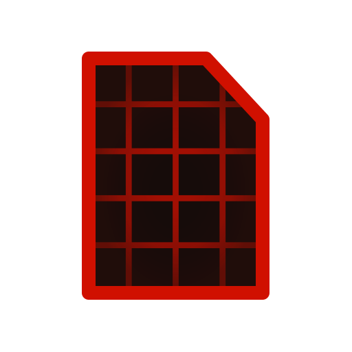
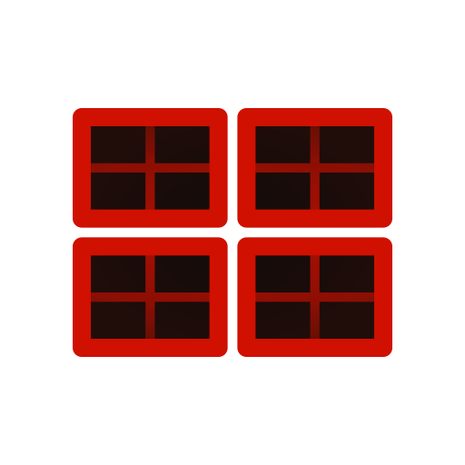

The Redstone
Browser
Components
Piston doors
Transportation
Farms
Computational
More
3x3 Piston Door
Clever Yeti
Dimensions
1x7x8 (56b)
Door size
3x3
Speed
7 ticks
Spam proof
Seamless
1-wide tileable
Smallest
Fastest
Build It!
Video Tutorial
This tutorial was made by the creator or with approval from the creator

Schematic
Open the schematic file using the
Litematica mod
to get an overlay of the blocks or paste it in a creative world
Download

Screenshots
Copy the build by following these screenshots